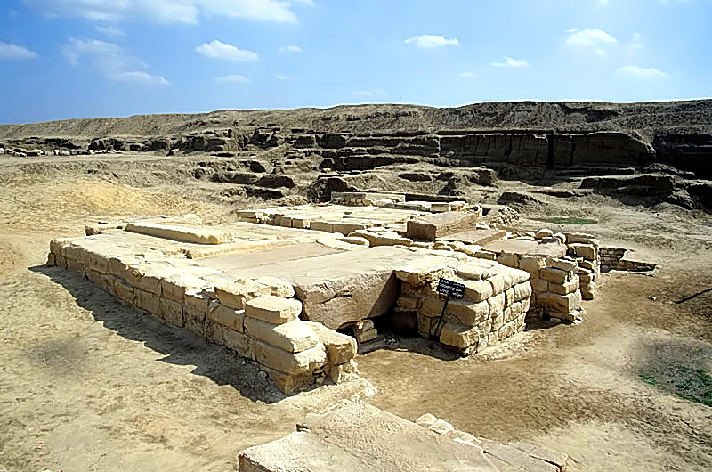

Tanis (Zoan)

- Find Name
- Tanis (Zoan)
- Historical Period
- Third Intermediate Period, 22nd Dynasty, c. 925 BC
- Artifact Date
- 11th–8th centuries BC (royal city; tombs c. 1000–900 BC)
- Date Discovered
- 1929–1956 (excavated)
- Discovery Location
- Tanis, Nile Delta, Egypt
- Current Location
- In situ, Nile Delta, Egypt; finds in the Egyptian Museum, Cairo
- Timeline Era
- Divided Monarchy
- Description
- The Delta capital whose royal necropolis Pierre Montet uncovered intact, including the silver coffin of Psusennes I and the gold mask of Shoshenq II. Tanis is the biblical Zoan, the city named when Hebron's antiquity is measured and where the psalmist says God worked wonders in Egypt.
- Biblical Significance
- Zoan is where Egypt's power was displayed and where, the psalm says, God displayed His. A royal tomb untouched by robbers, full of silver and gold, is a small parable of the Exodus itself: Egypt's wealth could not buy what Israel's God gave freely.
- Evidence Class
- Contextual
- Interpretations
- Scholars agree Tanis is biblical Zoan; the royal tombs are securely dated, and their value for the Bible is the Egyptian royal world of the Divided Monarchy period.
- Scripture Illuminated
- Related Books
- Related Places
Awaiting Review Not yet checked against scholarly sources. Treat its claims as provisional until this entry is reviewed. About verification
Last reviewed: not yet reviewed